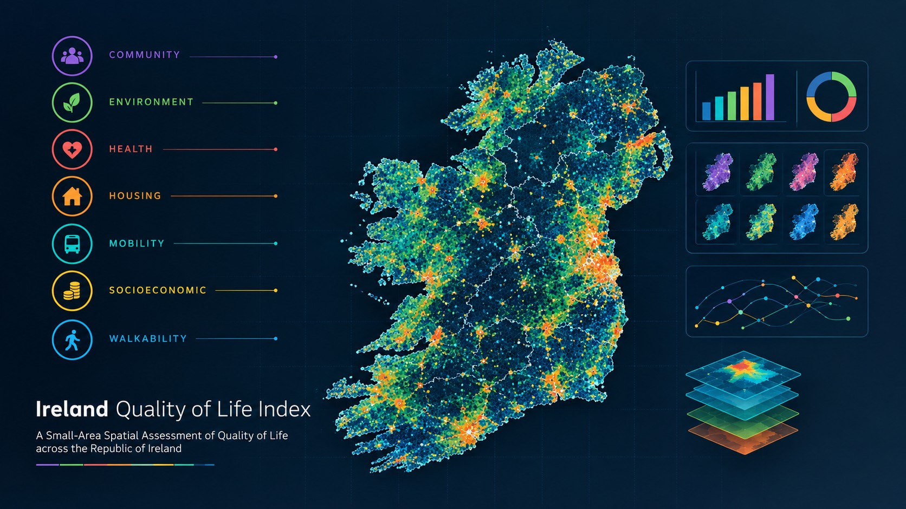

Independent geospatial research · Ireland
Make the invisible visible.
Spatial Evidence Lab turns geographic data into clear evidence about access, opportunity and change — so better decisions can be made in the places that matter.

Northern systemsLocal evidence51°53′N · 8°28′Wand who gets left out.
Selected evidence
Research that starts
with a place.
From a small town in West Cork to the quality of life across Ireland, our projects connect rigorous spatial analysis with practical questions.


What we investigate
Five ways of seeing
a place.
We work across disciplines because the challenges facing places do not fit neatly into one dataset.
Featured dataset · SEL-001
Ireland Quality
of Life Index.
A transparent, place-based index of the conditions that shape everyday life across Ireland. Explore the data, understand the method, and use the evidence.
Explore the index ↗
Open by default
Evidence you can
work with.
Our data, methods and visual outputs are designed to be inspected, reused and challenged. Browse the catalogue or visit the repository.
Browse the dataset catalogue ↗Visit us on GitHub ↗